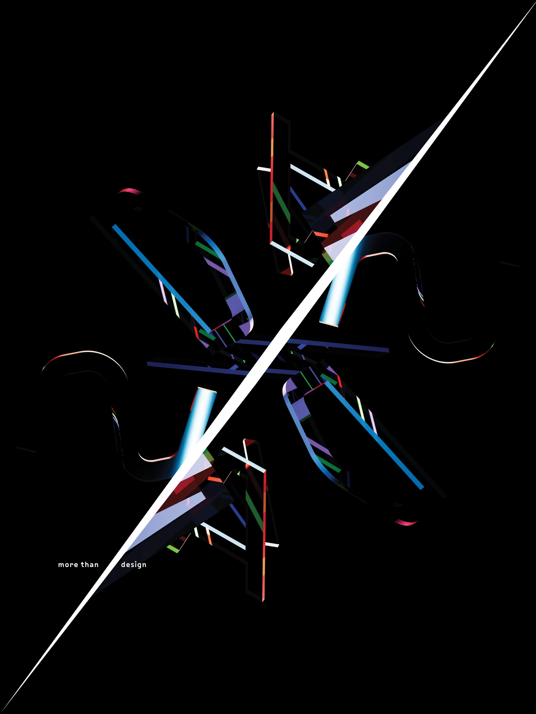

Artifact / Poster / Print
Posters
Printed artifacts for various occasions. Composition and form on one surface: meaning made from image, typography, color, and the choices between them.
Client
Various
Medium
Poster / Print
Year
Ongoing
Acknowledgements
OP/AL
Design
